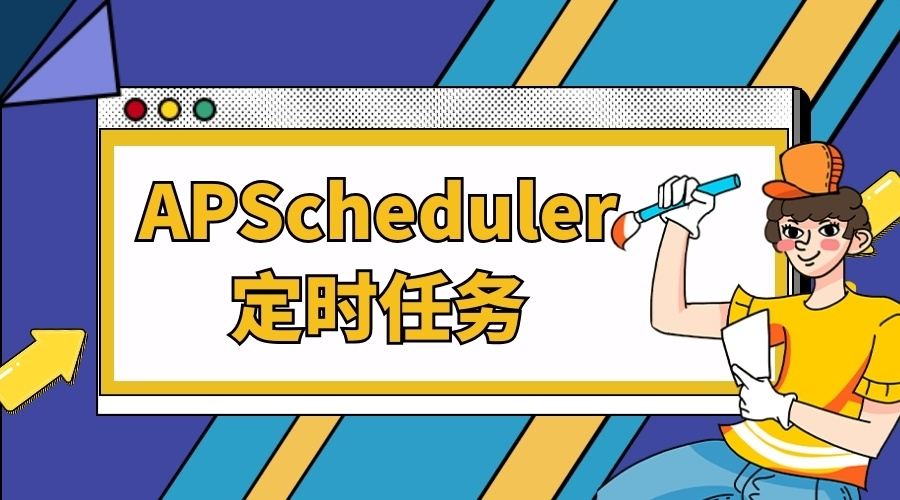

APScheduler即可以单独使用，也可以用于常见的Web框架。
高级 Python 调度程序(APScheduler)一个 Python 库，可让您安排稍后执行的 Python 代码，可以是一次，也可以是定期执行。您可以根据需要随时添加新作业或删除旧作业。如果将作业存储在数据库中，它们也将在调度程序重新启动后继续运行并保持其状态。重新启动调度程序后，它将运行它应该在脱机时运行的所有作业。

1. 安装工具
APScheduler 工具的安装方式原来如此简单
- 安装操作
# 直接安装即可
$ pip install apscheduler
# 下载安装即可
$ https://pypi.python.org/pypi/APScheduler/
$ python setup.py install
- 简单使用
from datetime import datetime
from apscheduler.schedulers.background import BackgroundScheduler
def tick(text=None):
print(f"Tick! The time is: {datetime.now()} - {text}")
if __name__ == '__main__':
scheduler = BackgroundScheduler(timezone="Asia/Shanghai")
# 使用date触发器
scheduler.add_job(tick, 'date', run_date=date(2009, 11, 6), args=['hello'])
# 使用interval触发器
scheduler.add_job(tick, 'interval', hours=2, seconds=3)
# 使用crontab触发器
scheduler.add_job(tick, 'cron', hours=2, seconds=3)
try:
print('Press Ctrl+C to exit ...')
scheduler.start() # 启动任务
except (KeyboardInterrupt, SystemExit):
pass
2. 基本组件
基本组件分为:
triggers|job stores|executors|schedulers
- triggers(触发器)
触发器(triggers)提供的是 scheduling 的调度逻辑，并且每个 job 都有属于自己 triggers ，用于管理任务何时开始执行。除了在初始配置之外，triggers 完全是无状态的。
- job stores(任务存储器)
任务存储器(job stores)主要包含的是 scheduling 的调度任务。默认情况下，job stores 会将任务存储在内存中，当然你也可以将任务存储在各种各样类型的数据库中，达到持久存储的效果。存储的时候会对数据进行序列化，再被加载的时候进行反序列化。除了默认情况下，job stores 不会将 job data 存储在内存中，而是充当中间人，用于在后端保存、加载、更新和搜索任务。job stores 绝对不会在 schedulers 之间共享数据的。
- executors(执行器)
执行器(executors)是处理 job 任务如何运行的，通常将 job 指定的可调用对象提交给线程池或进程池来完成此操作。作业完成后，执行器会通知 scheduler 调度程序，调度程序随后会发出相应的事件。
- schedulers(任务调度器)
任务调度器(schedulers)的作用就是将各个组件给调度起来。通常，你的应用程序中只会运行一个 schedulers。应用程序开发人员通常不直接处理任务存储(job stores)，执行器(executors)和触发器(triggers)。相反，任务调度器(schedulers)提供了适当的接口来处理所有这些。配置 job stores 和 executors 是通过 schedulers 完成的，添加、修改和删除作业也是如此。
3. 正确选择
Choosing the right scheduler, job store(s), executor(s) and trigger(s)
apscheduler.eventsapscheduler.executors.baseapscheduler.executors.debugapscheduler.executors.pool- 线程池执行器、进程池执行器
apscheduler.executors.asyncio- asyncio 程序执行器
apscheduler.executors.gevent- Gevent 程序执行器
apscheduler.executors.twisted- Twisted 程序执行器
apscheduler.jobapscheduler.jobstores.baseapscheduler.jobstores.memory- 没有序列化，任务存储在内存中，增删改查都是在内存中完成
apscheduler.jobstores.sqlalchemy- 使用 SQLAlchemy 这个 ORM 框架作为存储方式
apscheduler.jobstores.redis- 使用 redis 作为存储器
apscheduler.jobstores.mongodb- 使用 mongodb 作为存储器
apscheduler.jobstores.rethinkdb- 使用 rethinkdb 作为存储器
apscheduler.jobstores.zookeeper- 使用 zookeeper 作为存储器
apscheduler.schedulersapscheduler.schedulers.baseapscheduler.schedulers.blocking- 适用于调度程序是进程中唯一运行的进程，调用 start 函数会阻塞当前线程，不能立即返回
apscheduler.schedulers.background- 适用于调度程序在应用程序的后台运行，调用 start 后主线程不会阻塞
apscheduler.schedulers.asyncio- 适用于使用了 Asyncio 模块的应用程序
apscheduler.schedulers.gevent- 适用于使用 Gevent 模块的应用程序
apscheduler.schedulers.tornado- 适用于构建 Tornado 的应用程序
apscheduler.schedulers.twisted- 适用于构建 Twisted 的应用程序
apscheduler.triggers.baseapscheduler.triggers.cronapscheduler.triggers.date- date 触发器
apscheduler.triggers.interval- interval 触发器
apscheduler.triggers.combining- crontab 触发器
4. 调度配置
主要讲解的是任务调度程序(scheduler)的配置和使用
APScheduler提供了许多不同的方法来配置任务调度程序(scheduler)，这样就可以在任何环境中获得最大的灵活性。你可以使用字典配置；你也可以将选项作为关键字参数传递；你还可以先实例化调度程序，然后添加作业并配置调度程序。以下命令将为你创建一个名为
scheduler的后台执行的任务调度程序，默认将任务存储在MemoryJobStore内存中，使用的是ThreadPoolExecutor线程池且默认最大线程数为10个。
from apscheduler.schedulers.background import BackgroundScheduler
scheduler = BackgroundScheduler()
- 下面是三种添加任务调度程序(
scheduler)配置的三种方式，我推荐使用第一种，因为其更加的直观且易于后续代码的修改的调整，所以其余两种我就不展示代码了。- a MongoDBJobStore named “mongo”
- an SQLAlchemyJobStore named “default” (using SQLite)
- a ThreadPoolExecutor named “default”, with a worker count of 20
- a ProcessPoolExecutor named “processpool”, with a worker count of 5
- UTC as the scheduler’s timezone
- coalescing turned off for new jobs by default
- a default maximum instance limit of 3 for new jobs
from pytz import utc
from datetime import datetime
from apscheduler.schedulers.background import BackgroundScheduler
from apscheduler.jobstores.mongodb import MongoDBJobStore
from apscheduler.jobstores.sqlalchemy import SQLAlchemyJobStore
from apscheduler.executors.pool import ThreadPoolExecutor, ProcessPoolExecutor
jobstores = {
'mongo': MongoDBJobStore(),
'default': SQLAlchemyJobStore(url='sqlite:///jobs.sqlite')
}
executors = {
'default': ThreadPoolExecutor(20),
'processpool': ProcessPoolExecutor(5)
}
job_defaults = {
'coalesce': False,
'max_instances': 3
}
def tick():
print('Tick! The time is: %s' % datetime.now())
if __name__ == '__main__':
scheduler = BackgroundScheduler()
scheduler.configure(
jobstores=jobstores,
executors=executors,
job_defaults=job_defaults,
timezone=utc
)
scheduler.add_executor('processpool')
scheduler.add_job(tick, 'interval', seconds=3) # 添加任务
try:
print('Press Ctrl+C to exit ...')
scheduler.start() # 启动任务
except (KeyboardInterrupt, SystemExit):
pass
5. 使用方法
主要介绍任务的添加、删除、启动、停止等方式
- [1] 启动任务
实例化调度器之后，使用 start() 方法就可以开始跑预定义好的任务了。除了阻塞方式的 BlockingScheduler 模式以外的其他模式，调用之后将理解返回。之后，你可以继续对应用程序进行初始化以及向调度器添加任务。而对于 BlockingScheduler 模式，初始化之后，直接使用 start() 方法即可。
scheduler = BlockingScheduler()
scheduler.add_executor('processpool')
scheduler.add_job(tick, 'interval', seconds=3)
scheduler.start()
- [2] 关闭任务
默认情况下，调度程序关闭其作业存储和执行程序，并等待直到所有当前正在执行的作业完成。如果您不想等待，可以执行以下操作：
scheduler.shutdown()
scheduler.shutdown(wait=False)
- [3] 添加任务
添加任务有两种方式，第一种方式就是最常用 add_job() 方法，第二种方式是使用装饰器模式的 scheduled_job() 方法，用于基本不会变更的任务程序上。
需要额外注意的是，如果在 executor 或 job store 中使用序列化存储的话，那么在你添加任务的时候有些额外要求需要注意。第一是，任务 target 对象必须是全局内可以方法的；第二是，任务 target 的参数必须是可以进行序列化的。
在内置任务存储器中，只有 MemoryJobStore 不会序列化任务。在内置执行程序中，只有 ProcessPoolExecutor 会序列化任务。
scheduler = BlockingScheduler()
scheduler.add_executor('processpool')
scheduler.add_job(tick, 'interval', seconds=3, id='tick')
- [4] 删除任务
从调度程序中删除作业时，它将从其关联的作业存储中删除，并且不再执行。有两种方式可以实现这一目标：第一种方式，就是通过使用 remove_job() 方法删除任务 ID 或者删除任务别名；第二种方式，就是通过使用 add_job() 方法的 remove() 达到删除的目的。
# using an explicit job ID:
scheduler.add_job(myfunc, 'interval', minutes=2, id='my_job_id')
scheduler.remove_job('my_job_id')
# use remove() way
job = scheduler.add_job(myfunc, 'interval', minutes=2)
job.remove()
- [5] 停止和恢复任务
# to pause a job
scheduler.add_job(myfunc, 'interval', minutes=2, id='my_job_id')
scheduler.pause_job('my_job_id')
scheduler.pause()
job = scheduler.add_job(myfunc, 'interval', minutes=2)
job.pause()
# to resume a job
scheduler.add_job(myfunc, 'interval', minutes=2, id='my_job_id')
scheduler.resume_job('my_job_id')
scheduler.resume()
job = scheduler.add_job(myfunc, 'interval', minutes=2)
job.resume()
- [6] 修改任务
# scheduler
scheduler.add_job(myfunc, 'interval', minutes=2, id='my_job_id')
scheduler.reschedule_job('my_job_id', trigger='cron', minute='*/5')
# job
job = scheduler.add_job(myfunc, 'interval', minutes=2)
job.modify(max_instances=6, name='Alternate name')
- [7] 获取任务
# 获取任务列表
scheduler.print_jobs()
scheduler.get_jobs()
scheduler.get_job('tick')
- [8] 打印日志
如果调度程序未按预期工作，则将 apscheduler 记录器的日志记录级别提高到 DEBUG 级别会很有帮助。如果您尚未首先启用日志记录，则可以执行以下操作：
import logging
logging.basicConfig()
logging.getLogger('apscheduler').setLevel(logging.DEBUG)
6. 实例说明
实例来自官方仓库的目录中，方便阅读
- [1] executors/processpool.py
from datetime import datetime
from apscheduler.schedulers.blocking import BlockingScheduler
from apscheduler.executors.pool import ThreadPoolExecutor, ProcessPoolExecutor
HIT_NUMBER = 0
executors = {
'default': ThreadPoolExecutor(20),
'processpool': ProcessPoolExecutor(1)
}
def hit():
global HIT_NUMBER
HIT_NUMBER += 1
print(f'Hit {HIT_NUMBER}! The time is {datetime.now()} ...')
if __name__ == '__main__':
scheduler = BlockingScheduler()
scheduler.add_executor('processpool')
scheduler.configure(executors=executors)
job = scheduler.add_job(hit, 'interval', seconds=1, id='hit')
print('Press Ctrl+C to exit')
try:
scheduler.start()
except (KeyboardInterrupt, SystemExit):
scheduler.shutdown()
- [2] jobstores/sqlalchemy.py
import sys
import os
from datetime import datetime, timedelta
from apscheduler.schedulers.blocking import BlockingScheduler
from apscheduler.jobstores.sqlalchemy import SQLAlchemyJobStore
jobstores = {
'sqlalchemy': SQLAlchemyJobStore(url='sqlite:///sqlalchemy_default.sqlite')
}
def alarm(time):
print('Alarm! This alarm was scheduled at %s.' % time)
if __name__ == '__main__':
scheduler = BlockingScheduler()
scheduler.configure(jobstores=jobstores)
scheduler.add_executor('processpool')
alarm_time = datetime.now() + timedelta(seconds=10)
scheduler.add_job(alarm, 'date', run_date=alarm_time, args=[datetime.now()])
print('Press Ctrl+C to exit')
try:
scheduler.start()
except (KeyboardInterrupt, SystemExit):
scheduler.shutdown()
- [3] misc/reference.py
import os
from apscheduler.schedulers.blocking import BlockingScheduler
if __name__ == '__main__':
scheduler = BlockingScheduler()
scheduler.add_job('sys:stdout.write', 'interval', seconds=3, args=['tick\n'])
print(f'Press Ctrl+C to exit')
try:
scheduler.start()
except (KeyboardInterrupt, SystemExit):
pass
- [4] rpc/server.py
import rpyc
from rpyc.utils.server import ThreadedServer
from apscheduler.schedulers.background import BackgroundScheduler
def print_text(text):
print(text)
class SchedulerService(rpyc.Service):
def exposed_add_job(self, func, *args, **kwargs):
return scheduler.add_job(func, *args, **kwargs)
def exposed_modify_job(self, job_id, jobstore=None, **changes):
return scheduler.modify_job(job_id, jobstore, **changes)
def exposed_reschedule_job(self, job_id, jobstore=None, trigger=None, **trigger_args):
return scheduler.reschedule_job(job_id, jobstore, trigger, **trigger_args)
def exposed_pause_job(self, job_id, jobstore=None):
return scheduler.pause_job(job_id, jobstore)
def exposed_resume_job(self, job_id, jobstore=None):
return scheduler.resume_job(job_id, jobstore)
def exposed_remove_job(self, job_id, jobstore=None):
scheduler.remove_job(job_id, jobstore)
def exposed_get_job(self, job_id):
return scheduler.get_job(job_id)
def exposed_get_jobs(self, jobstore=None):
return scheduler.get_jobs(jobstore)
if __name__ == '__main__':
scheduler = BackgroundScheduler()
scheduler.start()
protocol_config = {'allow_public_attrs': True}
server = ThreadedServer(SchedulerService, port=12345, protocol_config=protocol_config)
try:
server.start()
except (KeyboardInterrupt, SystemExit):
pass
finally:
scheduler.shutdown()
- [4] rpc/client.py
from time import sleep
import rpyc
conn = rpyc.connect('localhost', 12345)
job = conn.root.add_job('server:print_text', 'interval', args=['Hello, World'], seconds=2)
sleep(10)
conn.root.remove_job(job.id)
- [5] schedulers/blocking.py
from datetime import datetime
import os
from apscheduler.schedulers.blocking import BlockingScheduler
def tick():
print('Tick! The time is: %s' % datetime.now())
if __name__ == '__main__':
scheduler = BlockingScheduler()
scheduler.add_job(tick, 'interval', seconds=3)
print('Press Ctrl+{0} to exit'.format('Break' if os.name == 'nt' else 'C'))
try:
scheduler.start()
except (KeyboardInterrupt, SystemExit):
pass